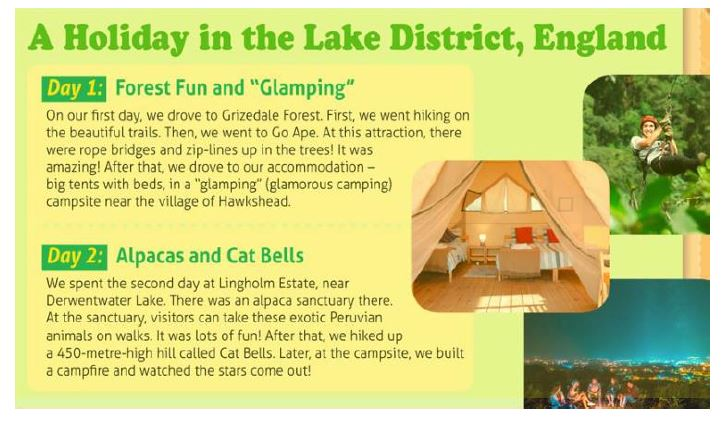

Escribiendo nuestro guion
En esta tarea tenéis que escribir vuestro guion basada en la información y las fotografías recopiladas en la Tarea1.
Debéis redactarlo en Google Docs y enviarlo por Classroom para que pueda corregirlo.
Debajo tenéis la rúbrica para evaluar el guión escrito (Criterio 2.3 en cuaderno de Séneca)
Aquí tenéis un modelo de ejemplo:

Rúbrica
| 4 Excelente | 3 Satisfactorio | 2 Mejorable | 1 Insuficiente | |
|---|---|---|---|---|
| Consulta de fuentes | Las fuentes (personas, datos, análisis) usadas son numerosas y diversas relacionadas con el tema y que aportan información relevante. (4) | Las fuentes usas son numerosas, diversas relacionadas con el tema aunque no todas aportan información relevante. (3) | Las fuentes consultadas son escasas de fuentes y estas no son demasiado variadas. No obstante, todas están relacionadas con el tema. (2) | Las fuentes consultadas son muy escasas y además no guardan relación directa con el tema ni aportan información relevante. (1) |
| Organización de la información y los datos | La información recabada está muy bien organizada, puede ser consultada rápidamente y destaca los puntos esenciales que hay que dar a conocer. (4) | La información recabada está bien organizada, puede ser consultada con facilidad aunque no quedan muy claro cuáles son los datos y puntos esenciales. (3) | La información recabada está bien organizada, aunque no es de fácil consulta. (2) | La información recabada de manera muy dispersa. No hay una estructura coherente. (1) |
| Redacción del reportaje | La redacción del texto del reportaje es ,muy buena: se da a conocer toda la información, la expresión escrita es adecuada y no hay fallos ortográficos. (4) | La redacción del texto del reportaje da a conocer toda la información, aunque hay algunos fallos en la expresión escrita. (3) | La redacción del texto del reportaje no da a conocer toda la información esencial. Se aprecian algunos fallos en la expresión que hacen que algunos puntos no queden claro. Hay además fallos ortográficos importantes. (2) | La redacción es confusa: no se comunica la mayor parte de la información, la expresión escrita es errónea y hay fallos graves de ortografía. (1) |
| Recursos complementarios | El texto del reportaje se completa con recursos (imágenes, dibujos, gráficos, tablas estadísticas) que aportan información y matices al texto. (4) | El texto del reportaje se completa con recursos (imágenes, dibujos, gráficos, tablas, aunque estos no aportan mucha información complementaria. (3) | El texto del reportaje se completa con recursos como imágenes o gráficos aunque estos son escasos y no aportan mucha información. (2) | No hay apenas recursos complementarios y estos no dan ninguna información sobre el tema. (1) |
- Actividad
- Nombre
- Fecha
- Puntuación
- Notas
- Reiniciar
- Imprimir
- Aplicar
- Ventana nueva